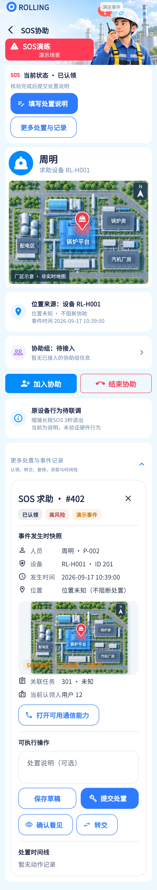

核心工作流已实现于前端；按钮可见性取决于风险/角色/状态，不能按单一截图判全部缺失。
相同 · 已有基础
处置说明、草稿、提交、关闭、重开、原因确认与动作时间线均有代码。
不同 · UI与场景
当前位于更多处置展开区，在SOS示例下非常长；设计把表单与其他动作单独整理。
01 / 先看 UI
两图显示宽度统一；设计390px与当前360逻辑宽的画布不同。各图可独立滚动到底，点击“原图”放大。


使用既有组件截图；业务数据为示例。
02 / 逐项核对功能与小交互
入口：已认领的 SOS → 更多处置与记录 · 当前形态：展开状态
| 编号 | 部位 | 设计要求 | 当前UI | 功能结论 | 下一步 |
|---|---|---|---|---|---|
| 29-01 | 事件上下文 | 事件名称、处理中状态 | 当前展开区有快照，但距离表单远 | 已有数据，UI不同 | 保持表单就近摘要并减少重复卡 |
| 29-02 | 说明 | 处置说明输入 | 当前可选说明，核验页另有500字输入 | 已有代码：handleComment | 统一两处输入与长度规则，避免用户认为两个提交不同 |
| 29-03 | 草稿 | 保存草稿 | 已有本机保存 | 已有代码：作用域隔离 | 保留恢复、退出清理，附件不混入已上传承诺 |
| 29-04 | 提交 | 提交处置 | 已有 | 已有代码：handle携version/comment，按权限可用 | 成功后显示真实状态，不能直接宣传闭环完成 |
| 29-05 | 普通关闭 | 满足权限与状态才可关闭 | 当前普通handling由值班角色可关闭 | 已有代码 | 明确原因确认，不让UI静态总可点 |
| 29-06 | 高风险复核 | 高风险处置需复核 | 参考一句权限条件未展开 | 已有代码：pending_review且reviewer才close | 作为当前额外核心功能保留 |
| 29-07 | 重开 | 已关闭事件再次核查 | 当前仅reviewer且closed可见 | 已有代码：reopen原因/version | 验证重开后时间线追加，原记录不覆盖 |
| 29-08 | 确认原因 | 关闭/重开再次确认 | 当前原因对话框与确认提交 | 已有代码 | 对齐表单和取消态 |
| 29-09 | 并发 | 多人同时操作不覆盖 | 参考未展开 | 已有代码：version、409冲突并保留草稿 | 保留，真实并发联调待验 |
| 29-10 | 底部 | 按钮与四栏 | 当前长展开区，事件详情隐藏底栏 | UI差异 | 先压缩导航与表单层级，验到底按钮可达 |
源码依据
events/events_page.dart:864,963,1157；events/event_policy.dart:27；events/event_repository.dart:142
链接为随报告保存的带行号快照；行号对应分析时源码。以函数和字段共同定位，不能将请求代码视为执行成功证据。